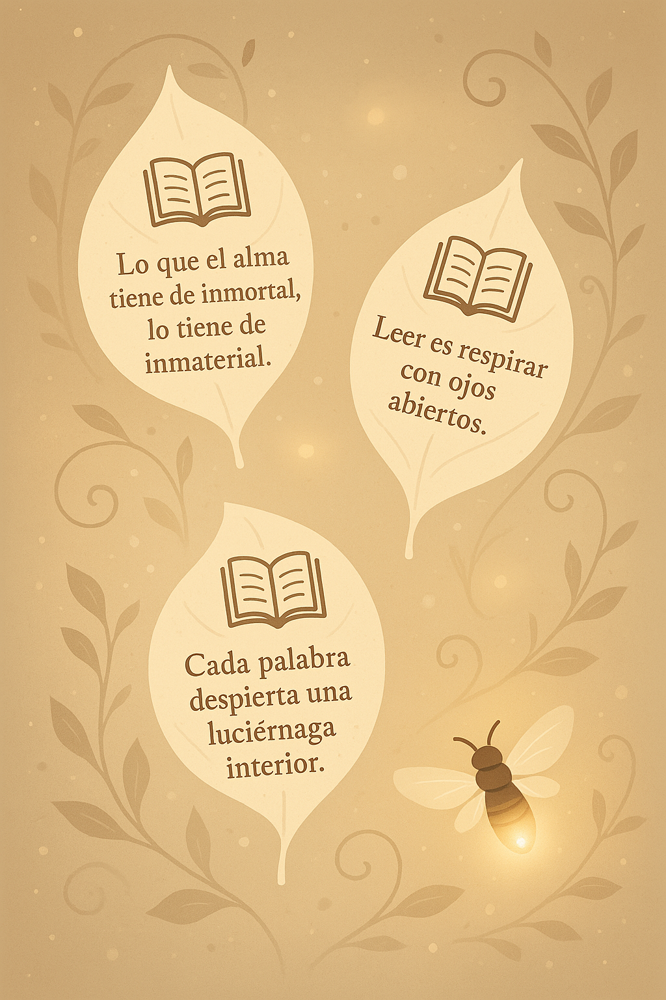

Lecturas que iluminan el alma

“El hombre que lee jamás está solo.”
— Anónimo
“Leer es respirar con palabras ajenas que se vuelven propias.”
— Reflexión personal
“Cada libro es una semilla. Si lo dejas crecer, se convierte en bosque.”
— Luciérnaga Sabionda